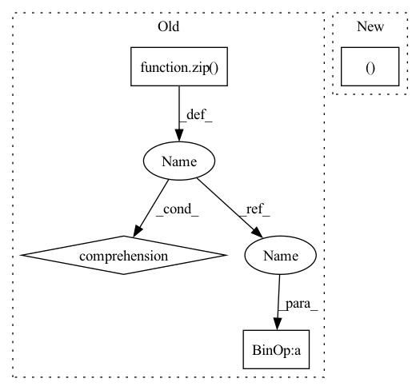

Pattern ID :1691

Before Change
sparse_dict = sparse_features.to_dict()
flattened_sparse_features = torch.cat(
[sparse_dict[key].values() + offset for key, offset in zip(keys, self.offsets)])
batch_offsets = sparse_features.offsets()
batch_size = len(sparse_features.lengths()) // len(keys)
After Change
def forward(self, sparse_features):
sparse_features = self.kjt_collector.all_to_all(sparse_features)
keys, batch_size = sparse_features.keys(), sparse_features.stride()
flattened_sparse_features = sparse_features.values()
batch_offsets = sparse_features.offsets()
In pattern: SUPERPATTERN
Frequency: 3
Non-data size: 4
Instances
Fragment ID: 6715236
Project Name: hpcaitech/freqcacheembedding
Commit Name: e892d6a9c3fb33fdb2a34b9aa52731740c585102
Time: 2022-07-14
Author: zhangg1998@outlook.com
File Name: recsys/models/dlrm.py
M Class Name: FusedSparseModules
N Class Name: FusedSparseModules
M Method Name: forward(2)
N Method Name: forward(2)
M Parent Class: nn.Module
N Parent Class: nn.Module
M File Name: recsys/models/dlrm.py
N File Name: recsys/models/dlrm.py
M Start Line: 143
M End Line: 155
N Start Line: 146
N End Line: 155
'>
Before Change
if self.training and self.layer_dropout > 0:
to_drop = torch.empty(len(self.blocks)).uniform_(0, 1) < self.layer_dropout
blocks = [block for block, drop in zip(self.blocks, to_drop) if not drop]
blocks = self.blocks[:1] if len(blocks) == 0 else blocks
block_args = list(map(lambda x: {"f_args": x[0], "g_args": x[1]}, block_args))
After Change
if self.training and self.layer_dropout > 0:
layers_and_args = layer_drop(layers_and_args, self.layer_dropout)
blocks, args = map(lambda ind: list(map(itemgetter(ind), layers_and_args)), (0, 1))
out = _ReversibleFunction.apply(x, blocks, args)
return torch.stack(out.chunk(2, dim=-1)).sum(dim=0)
'>
Fragment ID: 6715237
Project Name: lucidrains/sinkhorn-transformer
Commit Name: d5b9c649e59290b15c15f85d0bb182cb20b699fb
Time: 2020-04-15
Author: lucidrains@gmail.com
File Name: sinkhorn_transformer/reversible.py
M Class Name: ReversibleSequence
N Class Name: ReversibleSequence
M Method Name: forward(2)
N Method Name: forward(2)
M Parent Class: nn.Module
N Parent Class: nn.Module
M File Name: sinkhorn_transformer/reversible.py
N File Name: sinkhorn_transformer/reversible.py
M Start Line: 133
M End Line: 142
N Start Line: 161
N End Line: 174
'>
Before Change
sparse_dict = sparse_features.to_dict()
flattened_sparse_features = torch.cat(
[sparse_dict[key].values() + offset for key, offset in zip(keys, self.offsets)])
batch_offsets = sparse_features.offsets()
batch_size = len(sparse_features.lengths()) // len(keys)
After Change
def forward(self, sparse_features):
sparse_features = self.kjt_collector.all_to_all(sparse_features)
keys, batch_size = sparse_features.keys(), sparse_features.stride()
flattened_sparse_features = sparse_features.values()
batch_offsets = sparse_features.offsets()
'>
Fragment ID: 6715234
Project Name: hpcaitech/cachedembedding
Commit Name: e892d6a9c3fb33fdb2a34b9aa52731740c585102
Time: 2022-07-14
Author: zhangg1998@outlook.com
File Name: recsys/models/dlrm.py
M Class Name: FusedSparseModules
N Class Name: FusedSparseModules
M Method Name: forward(2)
N Method Name: forward(2)
M Parent Class: nn.Module
N Parent Class: nn.Module
M File Name: recsys/models/dlrm.py
N File Name: recsys/models/dlrm.py
M Start Line: 143
M End Line: 155
N Start Line: 146
N End Line: 155